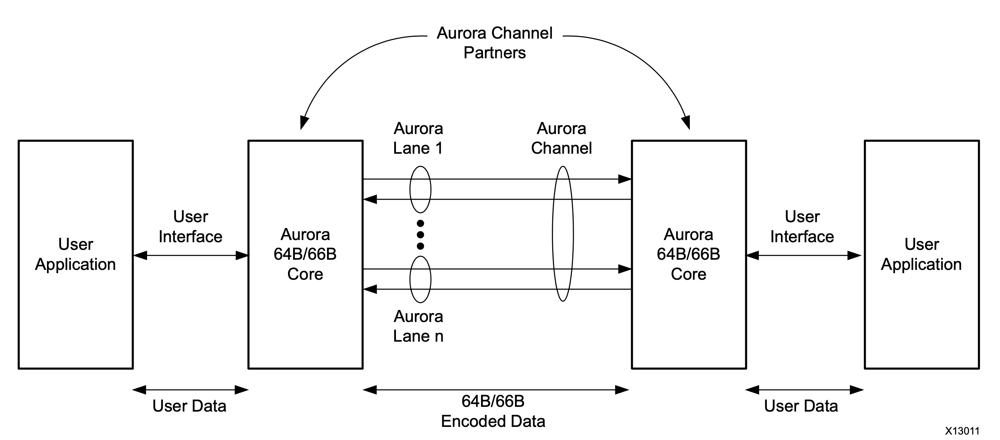
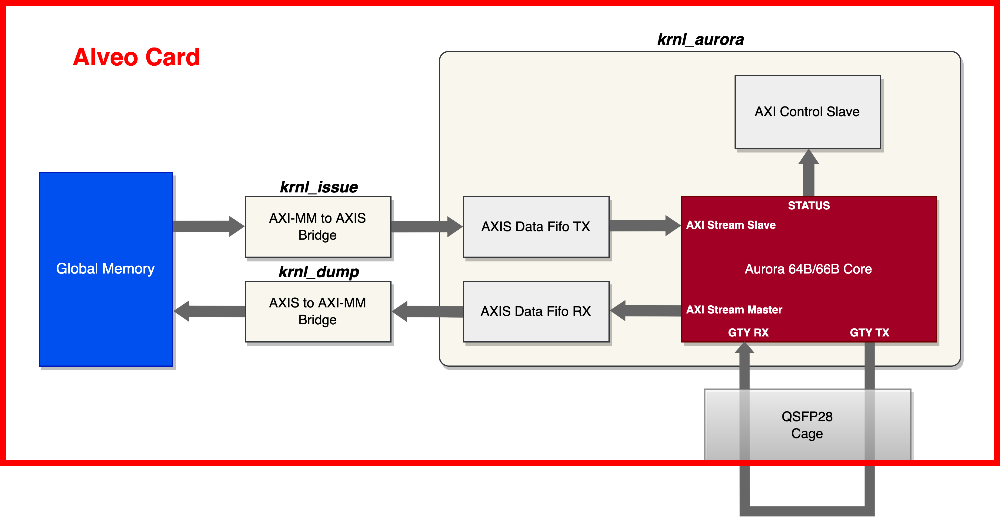
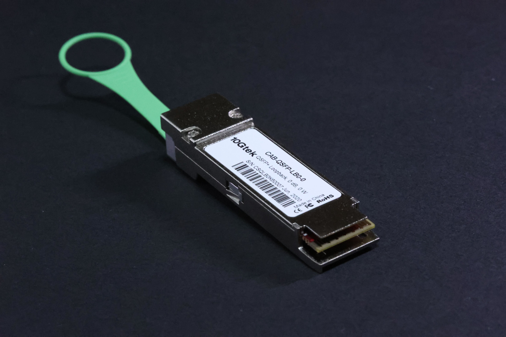
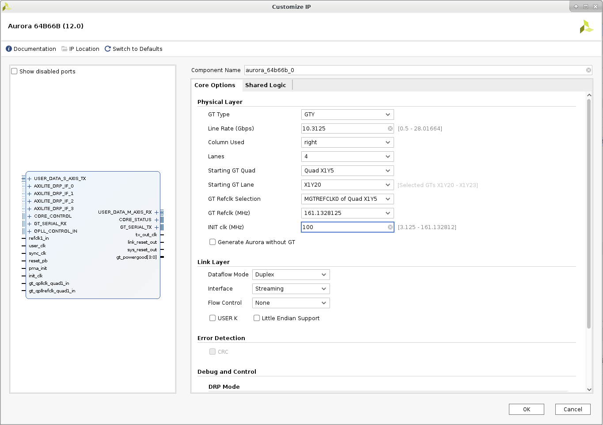
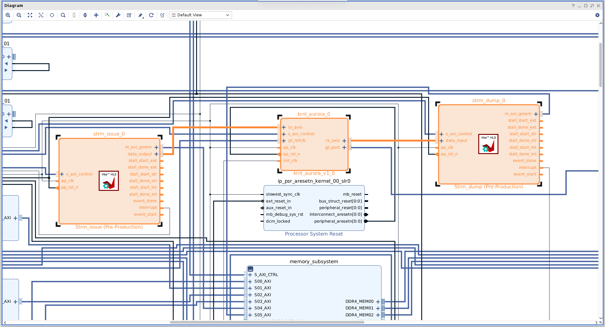
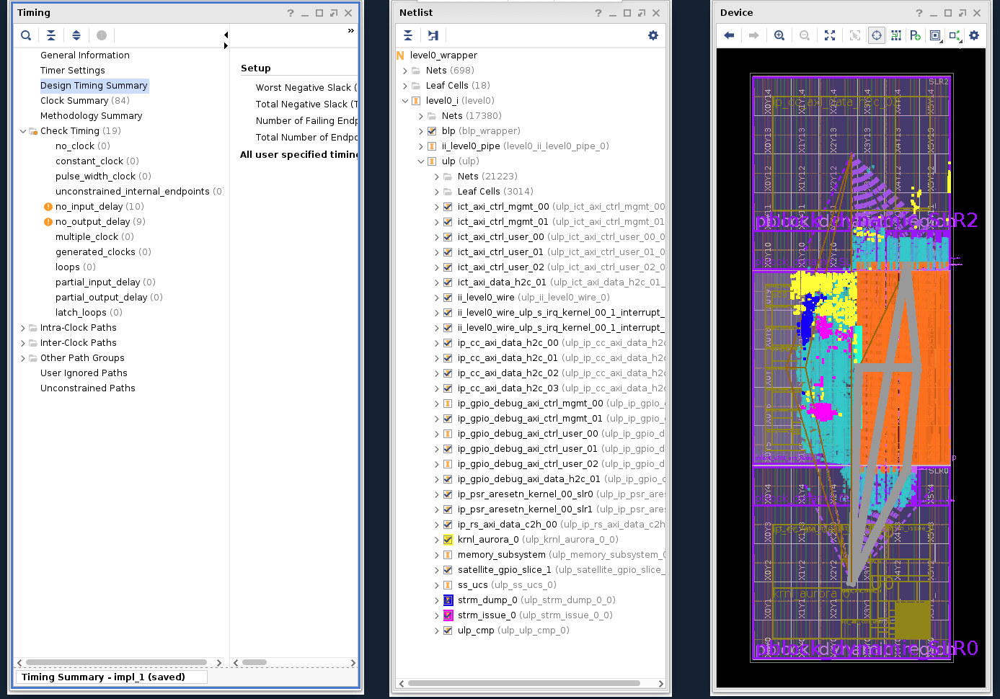
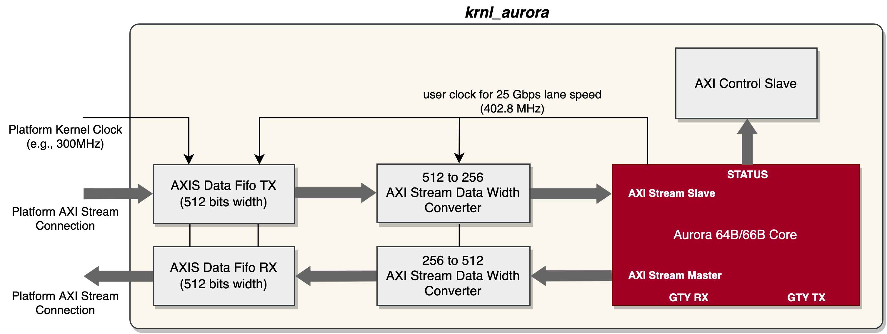

Vitis™ Application Acceleration Development Flow Tutorials |
Using Aurora IP in Alveo with Vitis Flow¶
Version: Vitis 2022.1
Introduction¶
Aurora 64B/66B is a lightweight, serial communications protocol for multi-gigabit links. On Alveo card, Aurora IP utilize GT transceiver (such as GTY) to realize the high speed data transfer. Each kind of Alveo accelerator cards have one or two QSFP28 ports, which connects to the GT transceiver of the FPGA. The user can integrate Aurora IP into Alveo card to implement full-duplex communication between cards at up to 100 Gbps data throughput on each QSFP28 port. The Aurora IP provides standard AXI Stream ports to user application for data transfer, and with Vitis flow, the users can easily integrate the Aurora IP into their acceleration design based on the Vitis target platform.
Following is the block diagram of Aurora 64B/66B communication channel.

For details on Aurora 64B/66B protocol please refer to Aurora 64B/66B Protocol Specification.
For details on Aurora 64B/66B IP please refer to Aurora 64B/66B IP Product Guide.
This tutorial will provide an example design and step-by-step instruction for integrating Aurora IP into Alveo accelerator cards with Vitis flow. The example design integrates a four-lane Aurora kernel with 10 Gbps lane rate (achieve total 40 Gbps throughput). The complete design steps in this tutorial includes: Aurora IP generation, reference RTL top module for Aurora IP, example test system integration, and example x86 host program. Following is the hardware block diagram of the example design.

There are three kernels in the hardware design:
krnl_aurora: this is a RTL kernel. krnl_aurora instantiates the Aurora core IP, an AXIS data FIFO for data transmit, an AXIS data FIFO for data receive, and an AXI control slave for Aurora IP status read back.
strm_issue: this is a HLS kernel, which implements a simple AXI master to AXI stream bridge for data transmit. It read the data from on-board global memory and send them to the Aurora core.
strm_dump: this is a HLS kernel, which implements a simple AXI stream to AXI master bridge for data receive. It receive the data from Aurora core and write them to the on-board global memory.
In the example design, host transfers block data into the on-board global memory, loads the data to Aurora core, and then stores the loopback data into on-board global memory for integrity check. To run the real hardware test of the design, you will need a 40 Gbps QSFP+ (0dB, 0W) loopback module inserted in the QSFP port of the Alveo cards. In case your Alveo card has two QSFP ports, please insert the module into QSFP 0. The loopback module looks like below photo.

The design supports Ubuntu 18.04/20.04 and Redhat/CentOS 7/8 systems and is validated on following XRT and target platform version:
XRT 2.13.466
Alveo U200: xilinx_u200_gen3x16_xdma_2_202110_1
Alveo U250: xilinx_u250_gen3x16_xdma_4_1_202210_1
All the flows in the example design are provided as command line fashion, which utilize Makefile and Tcl scripts. During some steps in this tutorial, some GUI operations are used for explicit explanation purpose. Below is the files description of the design directory.
├── hls
│ ├── strm_dump.cpp # HLS C source code for strm_dump kernel
│ └── strm_issue.cpp # HLS C source code for strm_issue kernel
├── host
│ └── host_krnl_aurora_test.cpp # x86 host program
├── krnl_aurora_test.cfg # Vitis link configuration file
├── Makefile # Makefile for full flow
├── README.md
├── rtl
│ ├── krnl_aurora_control_s_axi.v # Verilog source code for AXI control slave module
│ └── krnl_aurora.v # Verilog source code for top level of krnl_aurora
├── tcl
│ ├── gen_aurora_ip.tcl # Tcl script to generate Aurora IP
│ ├── gen_fifo_ip.tcl # Tcl script to generate AXI stream data FIFO
│ └── pack_kernel.tcl # Tcl script to package the RTL kernel krnl_aurora
└── xdc
└── aurora_64b66b_0.xdc # additional XDC file for krnl_aurora
Notes: If you are using RedHat/CentOS 7, the default installed GCC version is 4.x.x. You must use the following command to install and switch to GCC 7 before compiling the x86 host program.
sudo yum install centos-release-scl
sudo yum install devtoolset-7-gcc-c++
scl enable devtoolset-7 bash
Develop krnl_aurora kernel¶
krnl_aurora is our core kernel for the example design. From the previous block diagram, you can see that krnl_aurora includes three sub-module: core Aurora 64B/66B IP, an AXI stream data FIFO IP for data transmit, an AXI stream data FIFO IP for data receive, and an AXI control slave for Aurora status monitoring.
Generate Aurora 64B/66B Core IP¶
Now let’s generate the Aurora IP. To illustrate the IP configuration options more clearly, we firstly use Vivado GUI to see the graphical Aurora IP configuration options with U200 card as example.
Please start the Vivado GUI, then in the Tcl Console window enter following example command to create a project using the FPGA part corresponding to your Alveo card. In following command line, xcu200-fsgd2104-2-e is the FPGA part name of U200 card.
create_project aurora_test -part xcu200-fsgd2104-2-e
After the project created, click IP Catalog in the PROJECT MANAGER on the left, find Aurora 64B66B IP in the list, and double click it. Afterwards, the Aurora 64B66B IP configuration window pops up, and we review and make necessary necessary to the options as explained below.
We configure the Core Options tab as below:
Physical Layer
GT Type: GTY (default)
Line Rate (Gbps): 10.3125 (default)
Column Used: right (default)
Lanes: 4 (the example design uses four lanes)
Starting GT Quad: Quad X1Y5 (default, the Vitis linking process will choose the correct GT Quad)
Starting GT Lane: X1Y20 (default, the Vitis linking process will choose the correct GT Lane)
GT Refclk Selection: MGTREFCLK0 of Quad X1Y5 (default, the Vitis linking process will choose the correct GT Refclk)
GT Refclk (MHz): 161.1328125 (This matches the GT clock source on the Alveo card)
INIT clk (MHz): 100 (we will use the 100MHz clock provided in the U200 target platform as the INIT clk)
Generate Aurora without GT: keep unselected (we want the Aurora IP include the GT transceiver)
Link Layer
Dataflow Mode: Duplex (default)
Interface: Streaming (we use streaming mode in the example design)
Flow Control: None (default)
USER K: keep unselected (we don’t use USER-K in the example design)
Little Endian Support: keep unselected (we don’t need littl endian support in the example design)
Error Detection
CRC: keep unselected (we don’t need CRC in the example design)
Debug and Control
DRP Mode: Native (actually we don’t use DRP function in the example design)
Vivado Lab Tools: keep unselected (we don’t need use this feature in the example design)
Additional transceiver control and status ports: keep unselected (we don’t need use this feature in the example design)
We configure the Shared Logic tab as below:
Shared Logic
Include Shared Logic in core (in the example design, we use a single Aurora module)
Following above settings, the Aurora 64B66B IP configuration window is as below:

The configured IP will have an AXI stream slave port and an AXI stream master port, and the data width is 256 bits, namely 64 bits per lane. These two AXI stream ports work on 161.1328125 MHz user_clk domain, which is 1/64 of 10.3125 Gbps lane speed.
After clicking OK button, and Aurora IP configuration is finished. What we actually need is the generated aurora_64b66b_0.xci file, which will be used in the later IP package step. Just like mentioned earlier, the Aurora IP generation step will be finished by Vivado Tcl script in this tutorial, so let’s look at the script file ./tcl/gen_aurora_ip.tcl, which is used to generate the same output as above GUI flow. The major part of this script is as below:
create_ip -name aurora_64b66b \
-vendor xilinx.com \
-library ip \
-version 12.0 \
-module_name aurora_64b66b_0 \
-dir ./ip_generation
set_property -dict [list CONFIG.C_AURORA_LANES {4} \
CONFIG.C_LINE_RATE {10.3125} \
CONFIG.C_REFCLK_FREQUENCY {161.1328125} \
CONFIG.C_INIT_CLK {100} \
CONFIG.interface_mode {Streaming} \
CONFIG.drp_mode {Native} \
CONFIG.SupportLevel {1}] \
[get_ips aurora_64b66b_0]
With the script, you can use following command line to generate the Aurora IP (u200 card as example):
vivado -mode batch -source ./tcl/pack_kernel.tcl -tclargs xcu200-fsgd2104-2-e
But hold a minute, since a Makefile is provided to manage the full flow, we will use the make command to finish all the steps.
Generate AXI Stream Data FIFO IP¶
The AXI stream data FIFO IP is used to isolate the clock domains of the Aurora AXI stream port and Alveo platform AXI system, as well as provide data buffer especially for RX (receive) channels. This IP is simple and we provide a Tcl script ./tcl/gen_fifo_ip.tcl to generate it. Two options need modification: AXI stream data width is 32 bytes (256 bits), and the IP provides asynchronous clock. The major part of the script file shows as below:
create_ip -name axis_data_fifo \
-vendor xilinx.com \
-library ip \
-version 2.0 \
-module_name axis_data_fifo_0 \
-dir ./ip_generation
set_property -dict [list CONFIG.TDATA_NUM_BYTES {32} \
CONFIG.IS_ACLK_ASYNC {1}] \
[get_ips axis_data_fifo_0]
Similarly, we will use make command to generate the IP later.
AXI Control Slave Module¶
In this example design, we don’t configure the Aurora IP dynamically, but just monitor some status signal output from the Aurora IP. Meanwhile, krnl_aurora is designed to an always-run kernel, which means the host will not control the kernel running. Thus a simple AXI slave RTL module is used here. It implements a single read-only AXI slave register, connecting to those output status signals from the Aurora IP.
You can find the RTL source of this module at ./rtl/krnl_aurora_control_s_axi.v.
krnl_aurora Top Module¶
The top level Verilog file for krnl_aurora is located at ./rtl/krnl_aurora.v. While instantiates Aurora IP, AXI stream data FIFO IP and AXI control slave module, the top module inserts CDC module between Aurora IP and AXI control slave, which work in different domain. The top module also generates reset_pb and pma_init signals for Aurora IP. Please refer to the documents of Aurora 64B/66B IP for more details.
Package krnl_aurora Kernel¶
The Tcl script ./tcl/pack_kernel.tcl is provided to package the IP files and RTL modules described above to a Vitis kernel file. Some things to pay attention to:
The init_clk signal in the top level is automatically inferred as clock interface, but we manually remove it from the interface in the script. The reason is we would like to manually connect this clock pin to the designated clock source pin, so we should remove it from clock interface to avoid auto connection in Vitis linking stage
In addition to the auto inferred AXI / AXI stream interfaces, we manually infer the pre-defined differential gt_port type interface, and bond the top level GT TX/RX signals to the interface. Thus we easily connect the GT interface to the QSFP interface provided in the Alveo target platform.
In addition to the auto inferred normal clock, we manually infer the pre-defined differential gt_refclk type interface, and bond the top level GT reference clock signals to the interface. Thus we easily connect the GT reference clock interface to the corresponding interface provided in the Alveo target platform.
An additional XDC file ./xdc/aurora_64b66b_0.xdc is packed into the kernel file as well, since the generated Aurora IP doesn’t the reference clock definition for top level integration.
We will use make command to call this script to generate the kernel file krnl_aurora.xo later.
strm_issue and strm_dump Kernel¶
These two kernels use HLS to implement 256-bit AXI-to-AXIS and AXIS-to-AXI conversion function. The AXI stream data width 256 matches to those AXI stream port of krnl_aurora, so they can be connected together directly in later linking stage. You can find the source code for the two kernels at ./hls/strm_issue.cpp and ./hls/strm_dump.cpp.
In the example design flow, Vitis command v++ will be used by make tool to compile these two kernels to XO files strm_issue.xo and strm_dump.xo.
Kernel Integration (Linking)¶
After the three kernels are ready, the make tool call Vitis v++ command to finish the linking job. The configuration file krnl_aurora_test.cfg designates the connection topology of the kernels.
The major part of the configuration file is as below (use U200 for example):
[connectivity]
nk=krnl_aurora:1:krnl_aurora_0
nk=strm_issue:1:strm_issue_0
nk=strm_dump:1:strm_dump_0
# AXI connection
stream_connect=krnl_aurora_0.rx_axis:strm_dump_0.data_input
stream_connect=strm_issue_0.data_output:krnl_aurora_0.tx_axis
# ---------------------------------------
# Aurora signal connection (GT / clock)
# ---------------------------------------
# uncomment following lines for xilinx_u200_gen3x16_xdma_1_202110_1
connect=io_clk_qsfp_refclka_00:krnl_aurora_0/gt_refclk
connect=krnl_aurora_0/gt_port:io_gt_qsfp_00
connect=krnl_aurora_0/init_clk:ii_level0_wire/ulp_m_aclk_freerun_ref_00
Please note the last part of the configuration file, which is Aurora/GT related connection. In the above snippet, io_clk_qsfp_refclka_00 and io_gt_qsfp_00 are the GT reference clock interface and GT port interface, respectively. ii_level0_wire/ulp_m_aclk_freerun_ref_00 is the output pin for a 100MHz clock. These interfaces and clock pins information can be obtained by Vivado command platforminfo –verbose. Or you can also open the auto created Vivado project ULP block design to view these port/interface/signal name. Please note the default uncommented lines in the krnl_aurora_test.cfg file is for Alveo U200 card. If you using other supported Alveo cards, you should uncomment the relevant lines according your card model.
There is another thing we need to note. We have known the AXI stream ports of the Aurora IP work on 256 bits on around 161 MHz, and the external AXI stream ports of krnl_aurora will be connected to 300 MHz kernel clock by default in the linking stage, so there will not be performance bottleneck here. In the higher lane speed case, it might not be the case, which will be explained later.
The hardware linking step is finished by this command:
make xclbin PART=xxxx PLATFORM=xxx
Here PLATFORM is the Alveo target platform you are using, and the PART is the matching FPGA part number. You can find the applicable PLATFORM and PART string in the Makefile. If no PART and PLATFORM variables are assigned explicitly, the default PART and PLATFORM strings in the Makefile are for Alveo U200 card. Don’t forget to modify relevant lines of krnl_aurora_test.cfg file if you are not using U200 card.
After issuing make command, the full hardware building flow will go through from the beginning according to the dependency, including IP generation, RTL kernel packaging, HLS kernel compilation and finally linking to generate hardware container (XCLBIN) file.
After the building finishes, you could use following command to launch Vivado to open the auto generated link project to review the implementation result, including block design, timing, floorplan, etc.
vivado ./_x/link/vivado/vpl/prj/prj.xpr &
Following is the screenshot of portion of the block design for User Level Partition (ULP) with U200 card as the example. You can check that all the ports of krnl_aurora have be connected correctly.

Following is the timing result and placement information of the implemented hardware in U200 case.

Host Program¶
The example host program is in ./host/host_krnl_aurora_test.cpp. It use XRT Native API to load XCLBIN file, transfer data to and from the card, and control the start and finish of strm_dump and strm_issue. For krnl_aurora, since it is an always-run kernel, so the host only use the API read_register function to check the status of Aurora.
To compile the host program just enter:
make host
This will all GNU g++ tool to compile the host program and generate the executable host_krnl_aurora_test. To run it, use following command:
host_krnl_aurora_test [-m MEGABYTES]
MEGABYTES is the size of data block you want to transfer, and the default value is 100.
The host program will compare the received data and sent data, and report the data transfer throughput and data verification result. With the 10Gbps x 4 lanes configuration, the measured Aurora data transfer throughput is about 4.6GB/s. Refer to below example running log:
$ ./host_krnl_aurora_test
------------------------ krnl_aurora loopback test ------------------------
Transfer size: 100 MB
Generate TX data block.
Program running in hardware mode
Load krnl_aurora_test_hw.xclbin
Create kernels
Create TX and RX device buffer
Transfer TX data into device buffer
Check whether startup status of Aurora kernel is ready...
Aurora kernel startup status is GOOD: 1000111111111
[12]channel_up [11]soft_err [10]hard_err [9]mmcm_not_locked_out [8]gt_pll_lock [7:4]line_up [3:0]gt_powergood
Begin data loopback transfer
Data loopback transfer finish
Transfer time = 21.805 ms
Fetch RX data from device buffer and verification
Data loopback transfer throughput = 4586.1 MB/s
Aurora Error Status:
SOFT_ERR: 0
HARD_ERR: 0
Data verfication SUCCEED
One More Thing¶
You can see that the example design implements 10Gbps x 4 lanes, if you want to implement the Aurora transfer with the highest throughput 25Gbps per lane, following things need to do:
1. About Aurora IP¶
The only different option when configuring the Aurora IP is the C_LINE_RATE, you should set this to 25.78125 Gbps, which can be generated by the 161.1328125 MHz reference clock.
set_property -dict [list CONFIG.C_AURORA_LANES {4} \
CONFIG.C_LINE_RATE {25.78125} \
CONFIG.C_REFCLK_FREQUENCY {161.1328125} \
CONFIG.C_INIT_CLK {100} \
CONFIG.interface_mode {Streaming} \
CONFIG.drp_mode {Native} \
CONFIG.SupportLevel {1}] \
[get_ips aurora_64b66b_0]
In these configuration, since the AXI stream ports data width per lane is still 64 bits, so the AXI stream interfaces work on 25.78125 GHz / 64 = 402.8 MHz.
2. RTL Kernel krnl_aurora¶
As you have knowns that the Aurora IP AXI stream ports for the 4 lane configuration works on 256 bits @ 402.8 MHz. However the default kernel clock provided to the external AXI stream port (connected to AXI stream data FIFO) is 300 MHz during link stage. So there will be throughput mismatch issues here, which will lead to data loss (the Aurora IP AXI stream port for RX doesn’t support TREADY signal). To resolve this issue, one possible solution is to expand the external AXI stream port data width of krnl_aurora kernel. For example, we expand the external AXI stream data width to 512 bits, thus we generate the AXI stream data FIFO with 512 bits data width. So we also need a 256bit-to-512bit and another 512bit-to-256bit AXI stream data width converter IP in the krnl_aurora kernel top level module. Following is the block diagram of the krnl_aurora design with 25 Gbps lane speed.

3. HLS Kernel strm_issue and strm_dump¶
According to the explanation above, these two mover kernels should also have 512 bits AXI stream data width instead of original 256 bits to match krnl_aurora.
4. Top-level Linking Consideration¶
For DDR based Alveo card (such as U200 and U250), the single DDR bank provides approximately 19.2 GB/s bandwidth. For 25 Gbps x 4 lane Aurora IP, the unidirectional throughput is about 12.5 GB/s. So when implementing the 25 Gbps lane speed loopback example design, if we make both the strm_dump and strm_issue kernels access the same DDR bank, performance will be degraded by DDR bandwidth limitation. So to achieve the highest performance, we could connect the AXI masters of the two HLS kernels to different DDR bank. We can control the kernel slr and sp assignment in the v++ linking configuration file. As an example, for U200 case, add following lines at the last of krnl_aurora_test.cfg file:
slr=strm_issue_0:SLR1
slr=strm_dump_0:SLR1
slr=krnl_aurora_0:SLR2
sp=strm_issue_0.m_axi_gmem:DDR[1]
sp=strm_dump_0.m_axi_gmem:DDR[2]
Based on the four adjustments mentioned above, we implement a test design with U200 card, and observe about 11.5 GB/s throughput, like below running log:
$ ./host_krnl_aurora_test
------------------------ krnl_aurora loopback test ------------------------
Transfer size: 100 MB
Generate TX data block.
Program running in hardware mode
Load krnl_aurora_test_hw.xclbin
Create kernels
Create TX and RX device buffer
Transfer TX data into device buffer
Check whether startup status of Aurora kernel is ready...
Aurora kernel startup status is GOOD: 1000111111111
[12]channel_up [11]soft_err [10]hard_err [9]mmcm_not_locked_out [8]gt_pll_lock [7:4]line_up [3:0]gt_powergood
Begin data loopback transfer
Data loopback transfer finish
Transfer time = 8.723 ms
Fetch RX data from device buffer and verification
Data loopback transfer throughput = 11463.9 MB/s
Aurora Error Status:
SOFT_ERR: 0
HARD_ERR: 0
Data verification SUCCEED
Summary¶
Xilinx Aurora protocol and IP provide a lightweight and easy-to-use high-performance point-to-point communication solution on Alveo accelerator card. With Vitis flow, the user can use Aurora IP on Alveo cards easily to implements high speed inter-card communication without the involvement of PCIe and host. This enables various and flexible distributed or pipelined hardware acceleration applications.